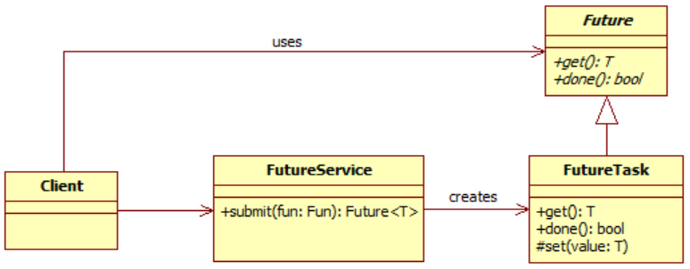
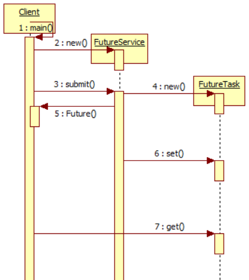

<!DOCTYPE html>
<html>
<head><meta name="generator" content="Hexo 3.8.0">
  <meta charset="utf-8">
  <meta name="baidu-site-verification" content="L6Lm9d5Crl">
  
  
  
  
  <title>Future Promise | Wzj&#39;s blog</title>
  <meta name="viewport" content="width=device-width, initial-scale=1, maximum-scale=1">
  <meta name="description" content="Future Promise： 理解future">
<meta name="keywords" content="Future Promise">
<meta property="og:type" content="article">
<meta property="og:title" content="Future Promise">
<meta property="og:url" content="http://superactivWzj.github.io/2019/04/20/Future/index.html">
<meta property="og:site_name" content="Wzj&#39;s blog">
<meta property="og:description" content="Future Promise： 理解future">
<meta property="og:locale" content="default">
<meta property="og:image" content="http://superactivwzj.github.io/2019/04/20/Future/1555775738_56_w774_h302.png">
<meta property="og:image" content="http://superactivwzj.github.io/2019/04/20/Future/1555786867_85_w496_h558.png">
<meta property="og:updated_time" content="2019-04-25T07:12:35.632Z">
<meta name="twitter:card" content="summary">
<meta name="twitter:title" content="Future Promise">
<meta name="twitter:description" content="Future Promise： 理解future">
<meta name="twitter:image" content="http://superactivwzj.github.io/2019/04/20/Future/1555775738_56_w774_h302.png">
  
  
    <link rel="icon" href="/img/avatar.png">
  
  
  <link rel="stylesheet" href="//cdn.bootcss.com/animate.css/3.5.0/animate.min.css">
  
  <link rel="stylesheet" href="/css/style.css">
  <link rel="stylesheet" href="/font-awesome/css/font-awesome.min.css">
  <link rel="apple-touch-icon" href="/apple-touch-icon.png">
  
  
      <link rel="stylesheet" href="/fancybox/jquery.fancybox.css">
  
  <!-- 加载特效 -->
    <script src="/js/pace.js"></script>
    <link href="/css/pace/pace-theme-flash.css" rel="stylesheet">
  <script>
      var yiliaConfig = {
          fancybox: true,
          animate: true,
          isHome: false,
          isPost: true,
          isArchive: false,
          isTag: false,
          isCategory: false,
          open_in_new: false
      }
  </script>
</head></html>
<body>
  <div id="container">
    <div class="left-col">
    <div class="overlay"></div>
<div class="intrude-less">
    <header id="header" class="inner">
        
<script src="https://7.url.cn/edu/jslib/comb/require-2.1.6,jquery-1.9.1.min.js"></script>

        <a href="/" class="profilepic">
            
            
            
        </a>
        <hgroup>
          <h1 class="header-author"><a href="/">Wzj</a></h1>
        </hgroup>
        
        
            <form>
                <input type="text" class="st-default-search-input search" id="local-search-input" placeholder="搜索一下" autocomplete="off">
            </form>
            <div id="local-search-result"></div>
        
        
            <script type="text/javascript">
                (function() {
                    'use strict';
                    function getMatchData(keyword, data) {
                        var matchData = [];
                        for(var i =0;i<data.length;i++){
                            if(data[i].title.toLowerCase().indexOf(keyword)>=0) 
                                matchData.push(data[i])
                        }
                        return matchData;
                    }
                    var $input = $('#local-search-input');
                    var $resultContent = $('#local-search-result');
                    $input.keyup(function(){
                        $.ajax({
                            url: '/search.json',
                            dataType: "json",
                            success: function( json ) {
                                var str='<ul class=\"search-result-list\">';                
                                var keyword = $input.val().trim().toLowerCase();
                                $resultContent.innerHTML = "";
                                if ($input.val().trim().length <= 0) {
                                    $resultContent.empty();
                                    $('#switch-area').show();
                                    return;
                                }
                                var results = getMatchData(keyword, json);
                                if(results.length === 0){
                                    $resultContent.empty();
                                    $('#switch-area').show();
                                    return;
                                } 
                                for(var i =0; i<results.length; i++){
                                    str += "<li><a href='"+ results[i].url +"' class='search-result-title'>"+ results[i].title +"</a></li>";
                                }
                                str += "</ul>";
                                $resultContent.empty();
                                $resultContent.append(str);
                                $('#switch-area').hide();
                            }
                        });
                    });
                })();
            </script>
        
        
            <div id="switch-btn" class="switch-btn">
                <div class="icon">
                    <div class="icon-ctn">
                        <div class="icon-wrap icon-house" data-idx="0">
                            <div class="birdhouse"></div>
                            <div class="birdhouse_holes"></div>
                        </div>
                        <div class="icon-wrap icon-ribbon hide" data-idx="1">
                            <div class="ribbon"></div>
                        </div>
                        
                        
                    </div>
                </div>
                <div class="tips-box hide">
                    <div class="tips-arrow"></div>
                    <ul class="tips-inner">
                        <li>菜单</li>
                        <li>标签</li>
                        
                        
                    </ul>
                </div>
            </div>
        
        <div id="switch-area" class="switch-area">
            <div class="switch-wrap">
                <section class="switch-part switch-part1">
                    <nav class="header-menu">
                        <ul>
                        
                            <li><a href="/archives/">所有文章</a></li>
                        
                        </ul>
                    </nav>
                    <nav class="header-nav">
                        <ul class="social">
                            
                                <a class="fl github" target="_blank" href="https://github.com/superactivWzj" title="github">github</a>
                            
                                <a class="fl weibo" target="_blank" href="https://weibo.com/u/5960820522" title="weibo">weibo</a>
                            
                        </ul>
                    </nav>
                </section>
                
                <section class="switch-part switch-part2">
                    <div class="widget tagcloud" id="js-tagcloud">
                        <a href="/tags/Future-Promise/" style="font-size: 10px;">Future Promise</a> <a href="/tags/Git/" style="font-size: 10px;">Git</a> <a href="/tags/Java/" style="font-size: 10px;">Java</a> <a href="/tags/Redis/" style="font-size: 10px;">Redis</a> <a href="/tags/Spring/" style="font-size: 10px;">Spring</a> <a href="/tags/golang/" style="font-size: 10px;">golang</a> <a href="/tags/linux/" style="font-size: 10px;">linux</a> <a href="/tags/python/" style="font-size: 10px;">python</a> <a href="/tags/python-线程池/" style="font-size: 10px;">python 线程池</a> <a href="/tags/sql/" style="font-size: 10px;">sql</a> <a href="/tags/分布式/" style="font-size: 10px;">分布式</a> <a href="/tags/多线程-JUC/" style="font-size: 10px;">多线程,JUC</a>
                    </div>
                </section>
                
                
                
            </div>
        </div>
    </header>
</div>

    </div>
    <div class="mid-col">
      <nav id="mobile-nav">
      <div class="overlay">
          <div class="slider-trigger"></div>
          <h1 class="header-author js-mobile-header hide"><a href="/" title="回到主页">Wzj</a></h1>
      </div>
    <div class="intrude-less">
        <header id="header" class="inner">
            <a href="/" class="profilepic">
                
                    
                
            </a>
            <hgroup>
              <h1 class="header-author"><a href="/" title="回到主页">Wzj</a></h1>
            </hgroup>
            
            <nav class="header-menu">
                <ul>
                
                    <li><a href="/archives/">所有文章</a></li>
                
                <div class="clearfix"></div>
                </ul>
            </nav>
            <nav class="header-nav">
                <div class="social">
                    
                        <a class="github" target="_blank" href="https://github.com/superactivWzj" title="github">github</a>
                    
                        <a class="weibo" target="_blank" href="https://weibo.com/u/5960820522" title="weibo">weibo</a>
                    
                </div>
            </nav>
        </header>
    </div>
</nav>
      <div class="body-wrap"><article id="post-Future" class="article article-type-post" itemscope itemprop="blogPost">
  
    <div class="article-meta">
      <a href="/2019/04/20/Future/" class="article-date">
      <time datetime="2019-04-20T13:16:37.000Z" itemprop="datePublished">2019-04-20</time>
</a>

    </div>
  
  <div class="article-inner">
    
      <input type="hidden" class="isFancy">
    
    
      <header class="article-header">
        
  
    <h1 class="article-title" itemprop="name">
      Future Promise
    </h1>
  


      </header>
      
      <div class="article-info article-info-post">
        

        
    <div class="article-tag tagcloud">
        <ul class="article-tag-list"><li class="article-tag-list-item"><a class="article-tag-list-link" href="/tags/Future-Promise/">Future Promise</a></li></ul>
    </div>

        <div class="clearfix"></div>
      </div>
      
    
    <div class="article-entry" itemprop="articleBody">
      
          
        <p><strong> Future Promise：</strong> <excerpt in index | 首页摘要><br>理解future<br><a id="more"></a></excerpt></p>
<the rest of contents | 余下全文>

<h1 id="Future"><a href="#Future" class="headerlink" title="Future"></a>Future</h1><p>Future的意思是未来、期货。如果有一个事情需要很长时间才能获取结果，与其一直等待，不如先拿一张提货单。获取提货单通常耗时很短，这里的提货单即Future。获取Future对象的线程稍后会使用该Future对象来获取运行结果。如果运行结果已经出来，则可以直接获取，否则还要继续等待结果出来。这跟在办公室用App下单后凭借手机上的订单号下楼去拿喜茶时一样，如果喜茶已经做好了可以直接拿走，不然还要继续等待。<br></p>
<ul>
<li>Client：请求者，负责向FutureService发出请求，并会立即接收到结果凭据。</li>
<li>Future：封装异步任务处理结果的凭据对象，负责检查异步任务处理是否完毕和返回异步任务处理结果。</li>
<li>FutureTask：Future的具体实现类。</li>
<li>FutureService：负责真正执行异步任务，并将处理结果设置到相应的Future实例中。</li>
</ul>
<p><br>第1、2步：Client启动并创建任务处理对象FutureService。<br>第3、4、5步：Client提交一个任务，FutureService立即创建一个Future对象并返回给Client。<br>第6步：任务处理完毕后FutureService将结果设置到Future对象中。<br>第7步：Client通过Future对象获取处理结果。</p>
<h1 id="Netty-Future"><a href="#Netty-Future" class="headerlink" title="Netty Future"></a>Netty Future</h1><p>Netty中Future的方法如下（未全部列出）：</p>
<figure class="highlight java"><table><tr><td class="gutter"><pre><span class="line">1</span><br><span class="line">2</span><br><span class="line">3</span><br><span class="line">4</span><br><span class="line">5</span><br><span class="line">6</span><br><span class="line">7</span><br><span class="line">8</span><br><span class="line">9</span><br><span class="line">10</span><br><span class="line">11</span><br><span class="line">12</span><br><span class="line">13</span><br><span class="line">14</span><br><span class="line">15</span><br></pre></td><td class="code"><pre><span class="line"><span class="comment">// 异步操作完成且正常终止</span></span><br><span class="line"><span class="function"><span class="keyword">boolean</span> <span class="title">isSuccess</span><span class="params">()</span></span>;</span><br><span class="line"><span class="comment">// 异步操作是否可以取消</span></span><br><span class="line"><span class="function"><span class="keyword">boolean</span> <span class="title">isCancellable</span><span class="params">()</span></span>;</span><br><span class="line"><span class="comment">// 异步操作失败的原因</span></span><br><span class="line"><span class="function">Throwable <span class="title">cause</span><span class="params">()</span></span>;</span><br><span class="line"><span class="comment">// 添加一个监听者，异步操作完成时回调，类比javascript的回调函数</span></span><br><span class="line"><span class="function">Future&lt;V&gt; <span class="title">addListener</span><span class="params">(GenericFutureListener&lt;? extends Future&lt;? <span class="keyword">super</span> V&gt;&gt; listener)</span></span>;</span><br><span class="line"><span class="function">Future&lt;V&gt; <span class="title">removeListener</span><span class="params">(GenericFutureListener&lt;? extends Future&lt;? <span class="keyword">super</span> V&gt;&gt; listener)</span></span>;</span><br><span class="line"><span class="comment">// 阻塞直到异步操作完成</span></span><br><span class="line"><span class="function">Future&lt;V&gt; <span class="title">await</span><span class="params">()</span> <span class="keyword">throws</span> InterruptedException</span>;</span><br><span class="line"><span class="comment">// 同上，但异步操作失败时抛出异常</span></span><br><span class="line"><span class="function">Future&lt;V&gt; <span class="title">sync</span><span class="params">()</span> <span class="keyword">throws</span> InterruptedException</span>;</span><br><span class="line"><span class="comment">// 非阻塞地返回异步结果，如果尚未完成返回null</span></span><br><span class="line"><span class="function">V <span class="title">getNow</span><span class="params">()</span></span>;</span><br></pre></td></tr></table></figure>
<p>值得注意的是sync与await的区别，它们都是同步阻塞，不同之处是当异步操作失败时，sync将会抛出错误异常，而await不会；如下是sync源码注释。</p>
<figure class="highlight java"><table><tr><td class="gutter"><pre><span class="line">1</span><br><span class="line">2</span><br><span class="line">3</span><br><span class="line">4</span><br></pre></td><td class="code"><pre><span class="line"><span class="comment">/**</span></span><br><span class="line"><span class="comment">* Waits for this future until it is done, and rethrows the cause of the failure if this future</span></span><br><span class="line"><span class="comment">* failed.</span></span><br><span class="line"><span class="comment">*/</span></span><br></pre></td></tr></table></figure>
<p>Future的状态转换图</p>
<figure class="highlight java"><table><tr><td class="gutter"><pre><span class="line">1</span><br><span class="line">2</span><br><span class="line">3</span><br><span class="line">4</span><br><span class="line">5</span><br><span class="line">6</span><br><span class="line">7</span><br><span class="line">8</span><br><span class="line">9</span><br><span class="line">10</span><br><span class="line">11</span><br><span class="line">12</span><br><span class="line">13</span><br><span class="line">14</span><br><span class="line">15</span><br><span class="line">16</span><br></pre></td><td class="code"><pre><span class="line">*                                      +---------------------------+</span><br><span class="line">*                                      | Completed successfully    |</span><br><span class="line">*                                      +---------------------------+</span><br><span class="line">*                                 +----&gt;      isDone() = <span class="keyword">true</span>      |</span><br><span class="line">* +--------------------------+    |    |   isSuccess() = <span class="keyword">true</span>      |</span><br><span class="line">* |        Uncompleted       |    |    +===========================+</span><br><span class="line">* +--------------------------+    |    | Completed with failure    |</span><br><span class="line">* |      isDone() = <span class="keyword">false</span>    |    |    +---------------------------+</span><br><span class="line">* |   isSuccess() = <span class="keyword">false</span>    |----+----&gt;      isDone() = <span class="keyword">true</span>      |</span><br><span class="line">* | isCancelled() = <span class="keyword">false</span>    |    |    |       cause() = non-<span class="keyword">null</span>  |</span><br><span class="line">* |       cause() = <span class="keyword">null</span>     |    |    +===========================+</span><br><span class="line">* +--------------------------+    |    | Completed by cancellation |</span><br><span class="line">*                                 |    +---------------------------+</span><br><span class="line">*                                 +----&gt;      isDone() = <span class="keyword">true</span>      |</span><br><span class="line">*                                      | isCancelled() = <span class="keyword">true</span>      |</span><br><span class="line">*                                      +---------------------------+</span><br></pre></td></tr></table></figure>
<p>Future对象有两种状态：未完成和已完成，其中已完成又有三种状态：成功、失败、用户取消。</p>
<p>仔细看完上面的图并联系Future接口中的方法，你是不是也会和我有相同的疑问：Future接口中的方法都是getter方法而没有setter方法，也就是说这样实现的Future子类的状态是不可变的，如果我们想要变化，那该怎么办呢？Netty提供的解决方法是：使用可写的Future即Promise。</p>
<h1 id="Netty-Promise"><a href="#Netty-Promise" class="headerlink" title="Netty-Promise"></a>Netty-Promise</h1><figure class="highlight java"><table><tr><td class="gutter"><pre><span class="line">1</span><br><span class="line">2</span><br><span class="line">3</span><br><span class="line">4</span><br><span class="line">5</span><br><span class="line">6</span><br><span class="line">7</span><br><span class="line">8</span><br><span class="line">9</span><br><span class="line">10</span><br></pre></td><td class="code"><pre><span class="line"><span class="comment">// 标记异步操作结果为成功，如果已被设置（不管成功还是失败）则抛出异常IllegalStateException</span></span><br><span class="line"><span class="function">Promise&lt;V&gt; <span class="title">setSuccess</span><span class="params">(V result)</span></span>;</span><br><span class="line"><span class="comment">// 同上，只是结果已被设置时返回False</span></span><br><span class="line"><span class="function"><span class="keyword">boolean</span> <span class="title">trySuccess</span><span class="params">(V result)</span></span>;</span><br><span class="line"></span><br><span class="line"><span class="function">Promise&lt;V&gt; <span class="title">setFailure</span><span class="params">(Throwable cause)</span></span>;</span><br><span class="line"><span class="function"><span class="keyword">boolean</span> <span class="title">tryFailure</span><span class="params">(Throwable cause)</span></span>;</span><br><span class="line"></span><br><span class="line"><span class="comment">// 设置结果为不可取消，结果已被取消返回False</span></span><br><span class="line"><span class="function"><span class="keyword">boolean</span> <span class="title">setUncancellable</span><span class="params">()</span></span>;</span><br></pre></td></tr></table></figure>
<p>Promise接口继承自Future接口，它提供的setter方法与常见的setter方法大为不同。Promise从Uncompleted—&gt;Completed的状态转变有且只能有一次，也就是说setSuccess和setFailure方法最多只会成功一个，此外，在setSuccess和setFailure方法中会通知注册到其上的监听者。</p>
<h2 id="AbstractFuture"><a href="#AbstractFuture" class="headerlink" title="AbstractFuture"></a>AbstractFuture</h2><figure class="highlight java"><table><tr><td class="gutter"><pre><span class="line">1</span><br><span class="line">2</span><br><span class="line">3</span><br><span class="line">4</span><br><span class="line">5</span><br><span class="line">6</span><br><span class="line">7</span><br><span class="line">8</span><br><span class="line">9</span><br><span class="line">10</span><br><span class="line">11</span><br><span class="line">12</span><br><span class="line">13</span><br><span class="line">14</span><br><span class="line">15</span><br><span class="line">16</span><br><span class="line">17</span><br><span class="line">18</span><br><span class="line">19</span><br><span class="line">20</span><br><span class="line">21</span><br><span class="line">22</span><br><span class="line">23</span><br><span class="line">24</span><br><span class="line">25</span><br><span class="line">26</span><br><span class="line">27</span><br><span class="line">28</span><br></pre></td><td class="code"><pre><span class="line">  <span class="meta">@Override</span></span><br><span class="line"><span class="function"><span class="keyword">public</span> V <span class="title">get</span><span class="params">()</span> <span class="keyword">throws</span> InterruptedException, ExecutionException </span>&#123;</span><br><span class="line">    await();</span><br><span class="line"></span><br><span class="line">    Throwable cause = cause();</span><br><span class="line">    <span class="keyword">if</span> (cause == <span class="keyword">null</span>) &#123;</span><br><span class="line">        <span class="keyword">return</span> getNow();</span><br><span class="line">    &#125;</span><br><span class="line">    <span class="keyword">if</span> (cause <span class="keyword">instanceof</span> CancellationException) &#123;</span><br><span class="line">        <span class="keyword">throw</span> (CancellationException) cause;</span><br><span class="line">    &#125;</span><br><span class="line">    <span class="keyword">throw</span> <span class="keyword">new</span> ExecutionException(cause);</span><br><span class="line">&#125;</span><br><span class="line"></span><br><span class="line"><span class="meta">@Override</span></span><br><span class="line"><span class="function"><span class="keyword">public</span> V <span class="title">get</span><span class="params">(<span class="keyword">long</span> timeout, TimeUnit unit)</span> <span class="keyword">throws</span> InterruptedException, ExecutionException, TimeoutException </span>&#123;</span><br><span class="line">    <span class="keyword">if</span> (await(timeout, unit)) &#123;</span><br><span class="line">        Throwable cause = cause();</span><br><span class="line">        <span class="keyword">if</span> (cause == <span class="keyword">null</span>) &#123;</span><br><span class="line">            <span class="keyword">return</span> getNow();</span><br><span class="line">        &#125;</span><br><span class="line">        <span class="keyword">if</span> (cause <span class="keyword">instanceof</span> CancellationException) &#123;</span><br><span class="line">            <span class="keyword">throw</span> (CancellationException) cause;</span><br><span class="line">        &#125;</span><br><span class="line">        <span class="keyword">throw</span> <span class="keyword">new</span> ExecutionException(cause);</span><br><span class="line">    &#125;</span><br><span class="line">    <span class="keyword">throw</span> <span class="keyword">new</span> TimeoutException();</span><br><span class="line">&#125;</span><br></pre></td></tr></table></figure>
<p>其内部是重写了JDK中Future接口的get方法，内部通过调用await方法实现同步阻塞等待，Netty中的Future接口中的getNow非阻塞地返回异步结果，如果尚未完成返回null。</p>
<h2 id="DefaultPromise"><a href="#DefaultPromise" class="headerlink" title="DefaultPromise"></a>DefaultPromise</h2><ol>
<li>创建Promise的子类，实例创建后可以添加监听（保存在listeners中）或阻塞进行等待（waiters计数器，表示等待的线程数）；</li>
<li>封装Promise到待监听的Task中；</li>
<li>提交Task到线程执行器executor的队列中；</li>
<li>线程执行器executor获取Task，并在线程中执行Task，Task执行结束（成功、失败、取消）就会调用Promise中注册的所有listeners以及唤醒所有等待的线程；</li>
</ol>
</the>
      
    </div>
    
  </div>
  
    
    <div class="copyright">
        <p><span>本文标题:</span><a href="/2019/04/20/Future/">Future Promise</a></p>
        <p><span>文章作者:</span><a href="/" title="访问 Wzj 的个人博客">Wzj</a></p>
        <p><span>发布时间:</span>2019年04月20日 - 21时16分</p>
        <p><span>最后更新:</span>2019年04月25日 - 15时12分</p>
        <p>
            <span>原始链接:</span><a class="post-url" href="/2019/04/20/Future/" title="Future Promise">http://superactivWzj.github.io/2019/04/20/Future/</a>
            <span class="copy-path" data-clipboard-text="原文: http://superactivWzj.github.io/2019/04/20/Future/　　作者: Wzj" title></span>
        </p>
        <p>
            <span>许可协议:</span><i class="fa fa-creative-commons"></i> <a rel="license" href="http://creativecommons.org/licenses/by-nc-sa/3.0/cn/" title="中国大陆 (CC BY-NC-SA 3.0 CN)" target="_blank">"署名-非商用-相同方式共享 3.0"</a> 转载请保留原文链接及作者。
        </p>
    </div>


<nav id="article-nav">
  
    <a href="/2019/04/24/Golang-study/" id="article-nav-newer" class="article-nav-link-wrap">
      <strong class="article-nav-caption"><</strong>
      <div class="article-nav-title">
        
          Golang-study
        
      </div>
    </a>
  
  
    <a href="/2019/04/17/linux-command/" id="article-nav-older" class="article-nav-link-wrap">
      <div class="article-nav-title">linux command</div>
      <strong class="article-nav-caption">></strong>
    </a>
  
</nav>


  
</article>

    <div id="toc" class="toc-article">
    <strong class="toc-title">文章目录</strong>
    <ol class="toc"><li class="toc-item toc-level-1"><a class="toc-link" href="#Future"><span class="toc-number">1.</span> <span class="toc-text">Future</span></a></li><li class="toc-item toc-level-1"><a class="toc-link" href="#Netty-Future"><span class="toc-number">2.</span> <span class="toc-text">Netty Future</span></a></li><li class="toc-item toc-level-1"><a class="toc-link" href="#Netty-Promise"><span class="toc-number">3.</span> <span class="toc-text">Netty-Promise</span></a><ol class="toc-child"><li class="toc-item toc-level-2"><a class="toc-link" href="#AbstractFuture"><span class="toc-number">3.1.</span> <span class="toc-text">AbstractFuture</span></a></li><li class="toc-item toc-level-2"><a class="toc-link" href="#DefaultPromise"><span class="toc-number">3.2.</span> <span class="toc-text">DefaultPromise</span></a></li></ol></li></ol>
</div>
<style>
    .left-col .switch-btn {
        display: none;
    }
    .left-col .switch-area {
        display: none;
    }
</style>
<input type="button" id="tocButton" value="隐藏目录" title="点击按钮隐藏或者显示文章目录">

<script src="https://7.url.cn/edu/jslib/comb/require-2.1.6,jquery-1.9.1.min.js"></script>

<script>
    var valueHide = "隐藏目录";
    var valueShow = "显示目录";
    if ($(".left-col").is(":hidden")) {
        $("#tocButton").attr("value", valueShow);
    }
    $("#tocButton").click(function() {
        if ($("#toc").is(":hidden")) {
            $("#tocButton").attr("value", valueHide);
            $("#toc").slideDown(320);
            $(".switch-btn, .switch-area").fadeOut(300);
        }
        else {
            $("#tocButton").attr("value", valueShow);
            $("#toc").slideUp(350);
            $(".switch-btn, .switch-area").fadeIn(500);
        }
    })
    if ($(".toc").length < 1) {
        $("#toc, #tocButton").hide();
        $(".switch-btn, .switch-area").show();
    }
</script>


<div class="bdsharebuttonbox">
	<a href="#" class="fx fa-weibo bds_tsina" data-cmd="tsina" title="分享到新浪微博"></a>
	<a href="#" class="fx fa-weixin bds_weixin" data-cmd="weixin" title="分享到微信"></a>
	<a href="#" class="fx fa-qq bds_sqq" data-cmd="sqq" title="分享到QQ好友"></a>
	<a href="#" class="fx fa-facebook-official bds_fbook" data-cmd="fbook" title="分享到Facebook"></a>
	<a href="#" class="fx fa-twitter bds_twi" data-cmd="twi" title="分享到Twitter"></a>
	<a href="#" class="fx fa-linkedin bds_linkedin" data-cmd="linkedin" title="分享到linkedin"></a>
	<a href="#" class="fx fa-files-o bds_copy" data-cmd="copy" title="分享到复制网址"></a>
</div>
<script>window._bd_share_config={"common":{"bdSnsKey":{},"bdText":"","bdMini":"2","bdMiniList":false,"bdPic":"","bdStyle":"2","bdSize":"24"},"share":{}};with(document)0[(getElementsByTagName('head')[0]||body).appendChild(createElement('script')).src='http://bdimg.share.baidu.com/static/api/js/share.js?v=89860593.js?cdnversion='+~(-new Date()/36e5)];</script>


    


    <div class="scroll" id="post-nav-button">
        
            <a href="/2019/04/24/Golang-study/" title="上一篇: Golang-study">
                <i class="fa fa-angle-left"></i>
            </a>
        
        <a title="文章列表"><i class="fa fa-bars"></i><i class="fa fa-times"></i></a>
        
            <a href="/2019/04/17/linux-command/" title="下一篇: linux command">
                <i class="fa fa-angle-right"></i>
            </a>
        
    </div>
    <ul class="post-list"><li class="post-list-item"><a class="post-list-link" href="/2019/05/29/sql-daily/">sql_daily</a></li><li class="post-list-item"><a class="post-list-link" href="/2019/05/08/python-daily/">python-daily</a></li><li class="post-list-item"><a class="post-list-link" href="/2019/04/25/python-concurrent-futures/">Python-concurrent.futures</a></li><li class="post-list-item"><a class="post-list-link" href="/2019/04/24/Golang-study/">Golang-study</a></li><li class="post-list-item"><a class="post-list-link" href="/2019/04/20/Future/">Future Promise</a></li><li class="post-list-item"><a class="post-list-link" href="/2019/04/17/linux-command/">linux command</a></li><li class="post-list-item"><a class="post-list-link" href="/2019/04/13/equals-hashcode/">为什么要重写equals和hashCode方法</a></li><li class="post-list-item"><a class="post-list-link" href="/2019/04/03/gitignore/">git 相关</a></li><li class="post-list-item"><a class="post-list-link" href="/2019/03/20/JUC/">JAVA JUC</a></li><li class="post-list-item"><a class="post-list-link" href="/2019/03/20/Redis/">Redis 相关</a></li><li class="post-list-item"><a class="post-list-link" href="/2019/03/20/Spring/">Spring 相关</a></li><li class="post-list-item"><a class="post-list-link" href="/2019/03/20/分布式/">分布式的一些算法</a></li></ul>
    
<script src="https://7.url.cn/edu/jslib/comb/require-2.1.6,jquery-1.9.1.min.js"></script>

    <script>
        $(".post-list").addClass("toc-article");
        // $(".post-list-item a").attr("target","_blank");
        $("#post-nav-button > a:nth-child(2)").click(function() {
            $(".fa-bars, .fa-times").toggle();
            $(".post-list").toggle(300);
            if ($(".toc").length > 0) {
                $("#toc, #tocButton").toggle(200, function() {
                    if ($(".switch-area").is(":visible")) {
                        $("#toc, .switch-btn, .switch-area").toggle();
                        $("#tocButton").attr("value", valueHide);
                        }
                    })
            }
            else {
                $(".switch-btn, .switch-area").fadeToggle(300);
            }
        })
    </script>


    <script>
        
    </script>

</div>
      <footer id="footer">
    <div class="outer">
        <div id="footer-info">
            <div class="footer-left">
                &copy; 2019 Wzj
            </div>
            <div class="footer-right">
                <a href="http://hexo.io/" target="_blank">Hexo &nbsp;&nbsp;</a><a href="https://github.com/superactivWzj" target="_blank">Blog</a> 
            </div>
        </div>
        
    </div>
</footer>

    </div>
    
<script src="https://7.url.cn/edu/jslib/comb/require-2.1.6,jquery-1.9.1.min.js"></script>

<script src="/js/main.js"></script>

    <script>
        $(document).ready(function() {
            var backgroundnum = 1;
            var backgroundimg = "url(/background/bg-x.jpg)".replace(/x/gi, Math.ceil(Math.random() * backgroundnum));
            $("#mobile-nav").css({"background-image": backgroundimg,"background-size": "cover","background-position": "center"});
            $(".left-col").css({"background-image": backgroundimg,"background-size": "cover","background-position": "center"});
        })
    </script>


<div class="scroll" id="scroll">
    <a href="#"><i class="fa fa-arrow-up"></i></a>
    <a href="#comments"><i class="fa fa-comments-o"></i></a>
    <a href="#footer"><i class="fa fa-arrow-down"></i></a>
</div>
<script>
    $(document).ready(function() {
        if ($("#comments").length < 1) {
            $("#scroll > a:nth-child(2)").hide();
        };
    })
</script>

<script async src="https://dn-lbstatics.qbox.me/busuanzi/2.3/busuanzi.pure.mini.js">
</script>

  <script language="javascript">
    $(function() {
        $("a[title]").each(function() {
            var a = $(this);
            var title = a.attr('title');
            if (title == undefined || title == "") return;
            a.data('title', title).removeAttr('title').hover(
            function() {
                var offset = a.offset();
                $("<div id=\"anchortitlecontainer\"></div>").appendTo($("body")).html(title).css({
                    top: offset.top - a.outerHeight() - 15,
                    left: offset.left + a.outerWidth()/2 + 1
                }).fadeIn(function() {
                    var pop = $(this);
                    setTimeout(function() {
                        pop.remove();
                    }, pop.text().length * 800);
                });
            }, function() {
                $("#anchortitlecontainer").remove();
            });
        });
    });
</script>


  </div>
</body>
</html>